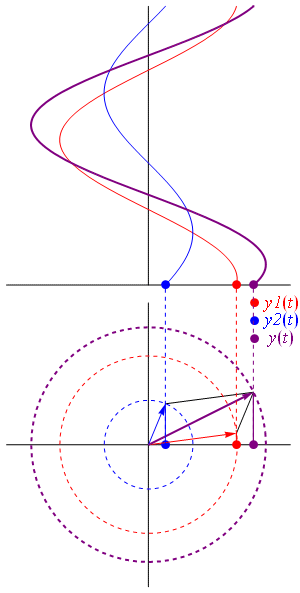
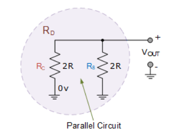
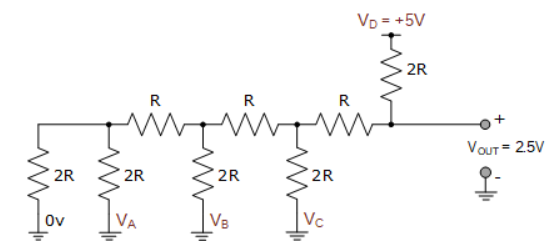

Phasors#
Author : Emad Etehadi
Phasor Diagrams#
Phasor diagrams present a graphical representation, plotted on a coordinate system, of the phase relationship between the voltages and currents within passive components or a whole circuit. Generally, phasors are defined relative to a reference phasor which is always points to the right along the x-axis. Sinusoidal waveforms of the same frequency can have a Phase Difference between themselves which represents the angular difference of the two sinusoidal waveforms. Also the terms “lead” and “lag” as well as “in-phase” and “out-of-phase” are commonly used to indicate the relationship of one sinusoidal waveform to another. The generalised sinusoidal expression given as: A(t) = Am sin(ωt ± Φ) represents the sinusoid in the time-domain form. But when presented mathematically in this way it can sometimes be difficult to visualise the angular or phasor difference between the two (or more) sinusoidal waveforms. One way to overcome this problem is to represent the sinusoids graphically within the spacial or phasor-domain form by using Phasor Diagrams, and this is achieved by the rotating vector method. Basically a rotating vector, also regarded as a “Phase Vector“, is a scaled line whose length represents an AC quantity that has both magnitude (“peak amplitude”) and direction (“phase”) and which has been “frozen” at some point in time. A vector that has an arrow head at one end which signifies partly the maximum value of the vector quantity ( Vm or Im ) and partly the end of the vector which rotates. Generally, vectors are assumed to pivot at one end around a fixed zero point known as the “point of origin”. The arrowed end represents the quantity which freely rotates in an anti-clockwise direction at an angular velocity, ( ω ). This anti-clockwise rotation of the vector is considered to be a positive rotation. Likewise, a clockwise rotation is considered to be a negative rotation. Although the both the terms vectors and phasors are used to describe a rotating line that itself has both magnitude and direction, the main difference between the two is that a vectors magnitude is the “peak value” of the sinusoid while a phasors complex magnitude is the “rms value” of the sinusoid as they deal with AC circuits which have reactance. In both cases the phase angle, direction and angular velocity remains the same. The phase of an alternating quantity at any instant in time can be represented by phasor diagrams. Thus phasor diagrams can be thought of as representing “functions of time”. A complete sine wave can be constructed by a single vector rotating anti-clockwise at an angular velocity of ω = 2πƒ, where ƒ denotes the frequency of the waveform. Then a Phasor is a quantity that has both “Magnitude” and “Direction”. Also, vectors obey the parallelogram law of addition and subtraction so can be added together to produce a vector sum which rotates anticlockwise at an angular speed. Phasors on the otherhand represent the mathematical: Rectangular, Polar or Exponential form. For example, (a + jb). Thus, phasor notation defines the effective (rms) magnitude of voltages and currents. Generally, when constructing a phasor diagram, angular velocity of a sine wave is always assumed to be: ω in rad/sec. Consider the phasor diagram below.

Phasor Diagrams for a Sinusoidal Waveform#
As the single vector rotates in an anti-clockwise direction, its tip at point A will rotate one complete revolution of 360o or 2π representing one complete cycle. If the length of its moving tip is transferred at different angular intervals in time to a graph as shown above, a sinusoidal waveform would be drawn starting at the left with zero time. Each position along the horizontal axis indicates the time that has elapsed since zero time, t = 0. When the vector is horizontal the tip of the vector represents the angles at 0o, 180o and at 360o. Likewise, when the tip of the vector is vertical it represents the positive peak value, ( +Am ) at 90o or π/2 and the negative peak value, ( -Am ) at 270o or 3π/2. Then the time axis of the waveform represents the angle either in degrees or radians through which the phasor has moved. So we can say that a phasor represent a scaled voltage or current value of a rotating vector which is “frozen” at some point in time, ( t ) and in our example above, this is at an angle of 30o. Sometimes when we are analysing alternating waveforms we may need to know the position of the phasor, representing the alternating quantity at some particular point especially when we want to compare two different waveforms on the same axis. For example, voltage and current. We have assumed in the waveform above that the waveform starts at time t = 0 with a corresponding phase angle in either degrees or radians.
But if a second waveform starts to the left or to the right of this zero point or we want to represent in phasor notation the relationship between the two waveforms then we will need to take into account this phase difference, Φ of the waveform. Consider the diagram below from the previous Phase Difference tutorial.
Phase Difference of a Sinusoidal Waveform#

The generalised mathematical expression to define these two sinusoidal quantities will be written as: $\( v(t) = V_m \sin(\omega t) \)$
The current, i is lagging the voltage, v by angle Φ and in our example above this is 30o. So the difference between the two phasors representing the two sinusoidal quantities is angle Φ and the resulting phasor diagram will be.
Phasor Diagram of a Sinusoidal Waveform#
The phasor diagram is drawn corresponding to time zero ( t = 0 ) on the horizontal axis. The lengths of the phasors are proportional to the values of the voltage, ( V ) and the current, ( I ) at the instant in time that the phasor diagram is drawn. The current phasor lags the voltage phasor by the angle, Φ, as the two phasors rotate in an anticlockwise direction as stated earlier, therefore the angle, Φ is also measured in the same anticlockwise direction.
If however, the waveforms are frozen at time, t = 30o, the corresponding phasor diagram would look like the one shown on the right. Once again the current phasor lags behind the voltage phasor as the two waveforms are of the same frequency.However, as the current waveform is now crossing the horizontal zero axis line at this instant in time we can use the current phasor as our new reference and correctly say that the voltage phasor is “leading” the current phasor by angle, Φ. Either way, one phasor is designated as the reference phasor and all the other phasors will be either leading or lagging with respect to this reference.
Phasor Addition of Phasor Diagrams#
One good use of phasors is for the summing of sinusoids of the same frequency. Sometimes it is necessary when studying sinusoids to add together two alternating waveforms, for example in an AC series circuit, that are not in-phase with each other. If they are “in-phase” that is, there is no phase shift then they can be added together in the same way as DC values to find the algebraic sum of the two vectors. For example, if two voltages of say 50 volts and 25 volts respectively are together “in-phase”, they will add or sum together to form one voltage of 75 volts (50 + 25). If however, they are not in-phase that is, they do not have identical directions or starting point then the phase angle between them needs to be taken into account so they are added together using phasor diagrams to determine their Resultant Phasor or Vector Sum by using the parallelogram law. Consider two AC voltages, V1 having a peak voltage of 20 volts, and V2 having a peak voltage of 30 volts where V1 leads V2 by 60o.
Phasor Addition of two Phasors#
The total voltage, VT of the two voltages can be found by firstly drawing a phasor diagram representing the two vectors and then constructing a parallelogram in which two of the sides are the voltages, V1 and V2 as shown below.

By drawing out the two phasors to scale onto graph paper, their phasor sum V1 + V2 can be easily found by measuring the length of the diagonal line, known as the “resultant r-vector”, from the zero point to the intersection of the construction lines 0-A. The downside of this graphical method is that it is time consuming when drawing the phasors to scale. Also, while this graphical method gives an answer which is accurate enough for most purposes, it may produce an error if not drawn accurately or correctly to scale. Then one way to ensure that the correct answer is always obtained is by an analytical method. Mathematically we can add the two voltages together by firstly finding their “vertical” and “horizontal” directions, and from this we can then calculate both the “vertical” and “horizontal” components for the resultant “r vector”, VT. This analytical method which uses the cosine and sine rule to find this resultant value is commonly called the Rectangular Form.

Definition of a Complex Sinusoid#
n the rectangular form, the phasor is divided up into a real part, x and an imaginary part, y forming the generalised expression Z = x ± jy. ( we will discuss this in more detail in the next tutorial ). This then gives us a mathematical expression that represents both the magnitude and the phase of the sinusoidal voltage as: $\( v = V_m \cos(\phi) + j V_m (\sin(\phi)) \)\( So the addition of two vectors, A and B using the previous generalised expression is as follows: \)\( A = x + jy \quad B = w + jz \)$
Phasor Addition using Rectangular Form#
Voltage, V2 of 30 volts points in the reference direction along the horizontal zero axis, then it has a horizontal component but no vertical component as follows. • Horizontal Component = 30 cos 0o = 30 volts • Vertical Component = 30 sin 0o = 0 volts This then gives us the rectangular expression for voltage V2 of: 30 + j0 Voltage, V1 of 20 volts leads voltage, V2 by 60o, then it has both horizontal and vertical components as follows. • Horizontal Component = 20 cos 60o = 20 x 0.5 = 10 volts • Vertical Component = 20 sin 60o = 20 x 0.866 = 17.32 volts This then gives us the rectangular expression for voltage V1 of: 10 + j17.32 The resultant voltage, VT is found by adding together the horizontal and vertical components as follows. VHorizontal = sum of real parts of V1 and V2 = 30 + 10 = 40 volts VVertical = sum of imaginary parts of V1 and V2 = 0 + 17.32 = 17.32 volts Now that both the real and imaginary values have been found the magnitude of voltage, VT is determined by simply using Pythagoras’s Theorem for a 90o triangle as follows. $\( V_T = \sqrt{(\text{Real or Horizontal Component})^2 + (\text{Imaginary or Vertical Component})^2} \)$
Then the resulting phasor diagram will be:

Phasor Subtraction of Phasor Diagrams#
Phasor subtraction is very similar to the above rectangular method of addition, except this time the vector difference is the other diagonal of the parallelogram between the two voltages of V1 and V2 as shown.
This time instead of “adding” together both the horizontal and vertical components we take them away, subtraction. $\( A = x + jy \quad B = w + jz \)$
The 3-Phase Phasor Diagrams#
Previously we have only looked at single-phase AC waveforms where a single multi-turn coil rotates within a magnetic field. But if three identical coils each with the same number of coil turns are placed at an electrical angle of 120o to each other on the same rotor shaft, a three-phase voltage supply would be generated. A balanced three-phase voltage supply consists of three individual sinusoidal voltages that are all equal in magnitude and frequency but are out-of-phase with each other by exactly 120o electrical degrees. Standard practice is to colour code the three phases as Red, Yellow and Blue to identify each individual phase with the red phase as the reference phase. The normal sequence of rotation for a three phase supply is Red followed by Yellow followed by Blue, ( R, Y, B ). As with the single-phase phasors above, the phasors representing a three-phase system also rotate in an anti-clockwise direction around a central point as indicated by the arrow marked ω in rad/s. The phasors for a three-phase balanced star or delta connected system are shown below.
The phase voltages are all equal in magnitude but only differ in their phase angle. The three windings of the coils are connected together at points, a1, b1 and c1 to produce a common neutral connection for the three individual phases. Then if the red phase is taken as the reference phase each individual phase voltage can be defined with respect to the common neutral as.
Three-phase Voltage Equations#
If the red phase voltage, VRN is taken as the reference voltage as stated earlier then the phase sequence will be R – Y – B so the voltage in the yellow phase lags VRN by 120o, and the voltage in the blue phase lags VYN also by 120o. But we can also say the blue phase voltage, VBN leads the red phase voltage, VRN by 120o. One final point about a three-phase system. As the three individual sinusoidal voltages have a fixed relationship between each other of 120o they are said to be “balanced” therefore, in a set of balanced three phase voltages their phasor sum will always be zero as: Va + Vb + Vc = 0
Complex Numbers and Phasors#
But real numbers are not the only kind of numbers we need to use especially when dealing with frequency dependent sinusoidal sources and vectors. As well as using normal or real numbers, Complex Numbers were introduced to allow complex equations to be solved with numbers that are the square roots of negative numbers, \(\sqrt{-1}\) . In electrical engineering this type of number is called an “imaginary number” and to distinguish an imaginary number from a real number the letter ” j ” known commonly in electrical engineering as the j-operator, is used. Thus the letter “j” is placed in front of a real number to signify its imaginary number operation. Examples of imaginary numbers are: j3, j12, j100 etc. Then a complex number consists of two distinct but very much related parts, a ” Real Number ” plus an ” Imaginary Number “. Complex Numbers represent points in a two dimensional complex or s-plane that are referenced to two distinct axes. The horizontal axis is called the “real axis” while the vertical axis is called the “imaginary axis”. The real and imaginary parts of a complex number are abbreviated as Re(z) and Im(z), respectively. Complex numbers that are made up of real (the active component) and imaginary (the reactive component) numbers can be added, subtracted and used in exactly the same way as elementary algebra is used to analyse DC Circuits. The rules and laws used in mathematics for the addition or subtraction of imaginary numbers are the same as for real numbers, j2 + j4 = j6 etc. The only difference is in multiplication because two imaginary numbers multiplied together becomes a negative real number. Real numbers can also be thought of as a complex number but with a zero imaginary part labelled j0. The j-operator has a value exactly equal to \(\sqrt{-1}\), so successive multiplication of “ j “, ( j x j ) will result in j having the following values of, -1, -j and +1. As the j-operator is commonly used to indicate the anticlockwise rotation of a vector, each successive multiplication or power of “ j “, j2, j3 etc, will force the vector to rotate through a fixed angle of 90’ in an anticlockwise direction as shown below. Likewise, if the multiplication of the vector results in a -j operator then the phase shift will be -90o, i.e. a clockwise rotation.
Vector Rotation of the j-operator#
90° rotation:
$\(
j^1 = \sqrt{-1} = +j
\)$
180° rotation:
$\(
j^2 = \left(\sqrt{-1}\right)^2 = -1
\)$
270° rotation:
$\(
j^3 = \left(\sqrt{-1}\right)^3 = -j
\)$
360° rotation:
$\(
j^4 = \left(\sqrt{-1}\right)^4 = +1
\)$
So by multiplying an imaginary number by j2 will rotate the vector by 180o anticlockwise, multiplying by j3 rotates it 270o and by j4 rotates it 360o or back to its original position. Multiplication by j10 or by j30 will cause the vector to rotate anticlockwise by the appropriate amount. In each successive rotation, the magnitude of the vector always remains the same.
Complex Numbers using the Rectangular Form#
In Electrical Engineering there are different ways to represent a complex number either graphically or mathematically. One such way that uses the cosine and sine rule is called the Cartesian or Rectangular Form. In the last tutorial about Phasors, we saw that a complex number is represented by a real part and an imaginary part that takes the generalised form of: $\( Z = x + jy \)\( Where: Z – is the Complex Number representing the Vector x – is the Real part or the Active component y – is the Imaginary part or the Reactive component j – is defined by \)\sqrt{-1}$
Complex Numbers using the Complex or s-plane#
In the rectangular form, a complex number can be represented as a point on a two dimensional plane called the complex or s-plane. So for example, Z = 6 + j4 represents a single point whose coordinates represent 6 on the horizontal real axis and 4 on the vertical imaginary axis as shown.
Four Quadrant Argand Diagram#
But as both the real and imaginary parts of a complex number in the rectangular form can be either a positive number or a negative number, then both the real and imaginary axis must also extend in both the positive and negative directions. This then produces a complex plane with four quadrants called an Argand Diagram as shown below.

On the Argand diagram, the horizontal axis represents all positive real numbers to the right of the vertical imaginary axis and all negative real numbers to the left of the vertical imaginary axis. All positive imaginary numbers are represented above the horizontal axis while all the negative imaginary numbers are below the horizontal real axis. This then produces a two dimensional complex plane with four distinct quadrants labelled, Q-I, Q-II, Q-III, and Q-IV. The Argand diagram above can also be used to represent a rotating phasor as a point in the complex plane whose radius is given by the magnitude of the phasor will draw a full circle around it for every 2π/ω seconds. Then we can extend this idea further to show the definition of a complex number in both the polar and rectangular form for rotations of 90’. $\( \begin{align*} 0^\circ & = \pm 360^\circ = +1 = 1 \angle 0^\circ = 1 + j0 \\ +90^\circ & = +\sqrt{-1} = +j = 1 \angle +90^\circ = 0 + j1 \\ -90^\circ & = -\sqrt{-1} = -j = 1 \angle -90^\circ = 0 - j1 \\ \pm 180^\circ & = \left(\sqrt{-1}\right)^2 = -1 = 1 \angle \pm 180^\circ = -1 + j0 \end{align*} \)\( Complex Numbers can also have “zero” real or imaginary parts such as: Z = 6 + j0 or Z = 0 + j4. In this case the points are plotted directly onto the real or imaginary axis. Also, the angle of a complex number can be calculated using simple trigonometry to calculate the angles of right-angled triangles, or measured anti-clockwise around the Argand diagram starting from the positive real axis. Then angles between 0 and 90o will be in the first quadrant ( I ), angles ( θ ) between 90 and 180o in the second quadrant ( II ). The third quadrant ( III ) includes angles between 180 and 270o while the fourth and final quadrant ( IV ) which completes the full circle, includes the angles between 270 and 360o and so on. In all the four quadrants the relevant angles can be found from: \)\( \tan^{-1} \left( \frac{\text{imaginary component}}{\text{real component}} \right) \)$
Addition and Subtraction of Complex Numbers#
The addition or subtraction of complex numbers can be done either mathematically or graphically in rectangular form. For addition, the real parts are firstly added together to form the real part of the sum, and then the imaginary parts to form the imaginary part of the sum and this process is as follows using two complex numbers A and B as examples. $\( \begin{align*} A & = x + jy \\ B & = w + jz \\ \\ A + B & = (x + w) + j(y + z) \\ A - B & = (x - w) + j(y - z) \end{align*} \)$
Complex Numbers Example No1#
Two vectors are defined as, A = 4 + j1 and B = 2 + j3 respectively. Determine the sum and difference of the two vectors in both rectangular ( a + jb ) form and graphically as an Argand Diagram. Mathematical Addition and Subtraction: Addition: $\( \begin{align*} A + B & = (4 + j1) + (2 + j3) \\ & = (4 + 2) + j(1 + 3) \\ & = 6 + j4 \end{align*} \)\( Subtraction: \)\( \begin{align*} A - B & = (4 + j1) - (2 + j3) \\ & = (4 - 2) + j(1 - 3) \\ & = 2 - j2 \\ \\ A + B & = (4 - 2) + j(1 - 3) \\ & = 2 - j2 \end{align*} \)$ Graphical Addition and Subtraction:
Multiplication and Division of Complex Numbers#
The multiplication of complex numbers in the rectangular form follows more or less the same rules as for normal algebra along with some additional rules for the successive multiplication of the j-operator where: j2 = -1. So for example, multiplying together our two vectors from above of A = 4 + j1 and B = 2 + j3 will give us the following result. $\( \begin{align*} A \times B & = (4 + j1)(2 + j3) \\ & = 8 + j12 + j2 + j^2 3 \\ & \text{but } j^2 = -1, \\ & = 8 + j4 - 3 \\ & = 5 + j4 \end{align*} \)\( Mathematically, the division of complex numbers in rectangular form is a little more difficult to perform as it requires the use of the denominators conjugate function to convert the denominator of the equation into a real number. This is called “rationalising”. Then the division of complex numbers is best carried out using “Polar Form”, which we will look at later. However, as an example in rectangular form lets find the value of vector A divided by vector B. \)\( \frac{A}{B} = \frac{4 + j1}{2 + j3} \)\( \)\text{Multiply top & bottom by the Conjugate of } 2 + j3:\( \)\( \frac{4 + j1 \times (2 - j3)}{2 + j3 \times (2 - j3)} = \frac{8 - j12 + j2 - j^2 3}{4 - j6 + j6 - j^2 9} \)\( \)\text{Since } j^2 = -1:\( \)\( = \frac{8 - j0 + 3}{4 + 9} = \frac{11 - j0}{13} \)\( \)\( = \frac{11}{13} + \frac{-j0}{13} = 0.85 - j0.77 \)$
The Complex Conjugate#
The Complex Conjugate, or simply Conjugate of a complex number is found by reversing the algebraic sign of the complex numbers imaginary number only while keeping the algebraic sign of the real number the same and to identify the complex conjugate of z the symbol z is used. For example, the conjugate of z = 6 + j4 is z = 6 – j4, likewise the conjugate of z = 6 – j4 is z = 6 + j4. The points on the Argand diagram for a complex conjugate have the same horizontal position on the real axis as the original complex number, but opposite vertical positions. Thus, complex conjugates can be thought of as a reflection of a complex number. The following example shows a complex number, 6 + j4 and its conjugate in the complex plane. Conjugate Complex Numbers:

The sum of a complex number and its complex conjugate will always be a real number as we have seen above. Then the addition of a complex number and its conjugate gives the result as a real number or active component only, while their subtraction gives an imaginary number or reactive component only. The conjugate of a complex number is an important element used in Electrical Engineering to determine the apparent power of an AC circuit using rectangular form.
Complex Numbers using Polar Form#
Unlike rectangular form which plots points in the complex plane, the Polar Form of a complex number is written in terms of its magnitude and angle. Thus, a polar form vector is presented as: Z = A ∠±θ, where: Z is the complex number in polar form, A is the magnitude or modulo of the vector and θ is its angle or argument of A which can be either positive or negative. The magnitude and angle of the point still remains the same as for the rectangular form above, this time in polar form the location of the point is represented in a “triangular form” as shown below.

As the polar representation of a point is based around the triangular form, we can use simple geometry of the triangle and especially trigonometry and Pythagoras’s Theorem on triangles to find both the magnitude and the angle of the complex number. As we remember from school, trigonometry deals with the relationship between the sides and the angles of triangles so we can describe the relationships between the sides as: $\( A^2 = x^2 + y^2 \)\( \)\( A = \sqrt{x^2 + y^2} \)\( Also, \)\( x = A \cdot \cos(\theta), \quad y = A \cdot \sin(\theta) \)\( Using trigonometry again, the angle θ of A is given as follows. \)\( \theta = \tan^{-1} \left( \frac{y}{x} \right) \)$ Then in Polar form the length of A and its angle represents the complex number instead of a point. Also in polar form, the conjugate of the complex number has the same magnitude or modulus it is the sign of the angle that changes, so for example the conjugate of 6 ∠30’ would be 6 ∠– 30’.
Converting between Rectangular Form and Polar Form#
In the rectangular form we can express a vector in terms of its rectangular coordinates, with the horizontal axis being its real axis and the vertical axis being its imaginary axis or j-component. In polar form these real and imaginary axes are simply represented by “A ∠θ“. Then using our example above, the relationship between rectangular form and polar form can be defined as.
Converting Polar Form into Rectangular Form, ( P→R )#
However,
$\(
x = A \cdot \cos \theta \quad y = A \cdot \sin \theta
\)\(
Therefore,
\)\(
6 \angle 30^\circ = (6 \cos \theta) + j(6 \sin \theta)
= (6 \cos 30^\circ) + j(6 \sin 30^\circ)
= (6 \times 0.866) + j(6 \times 0.5)
= 5.2 + j3
\)$
Converting Rectangular Form into Polar Form, ( R→P )#
where:
$\(
A = \sqrt{5.2^2 + 3^2} = 6
\)\(
and
\)\(
\theta = \tan^{-1} \left( \frac{3}{5.2} \right) = 30^\circ
\)\(
Hence,
\)\(
(5.2 + j3) = 6 \angle 30^\circ
\)$
Polar Form Multiplication and Division#
Rectangular form is best for adding and subtracting complex numbers as we saw above, but polar form is often better for multiplying and dividing. To multiply together two vectors in polar form, we must first multiply together the two modulus or magnitudes and then add together their angles.
Multiplication in Polar Form#
Multiplying together \(\(6 \angle 30^\circ\) and \(8 \angle -45^\circ\)\) in polar form gives us:
$\(
Z_1 \times Z_2 = 6 \times 8 \angle \left( 30^\circ + (-45^\circ) \right) = 48 \angle -15^\circ
\)$
Division in Polar Form#
Likewise, to divide together two vectors in polar form, we must divide the two modulus and then subtract their angles as shown. $\( \frac{Z_1}{Z_2} = \left( \frac{A_1}{A_2} \right) \angle \left( \theta_1 - \theta_2 \right) \)\( \)\( \frac{Z_1}{Z_2} = \left( \frac{6}{8} \right) \angle \left( 30^\circ - (-45^\circ) \right) = 0.75 \angle 75^\circ \)$ Fortunately today’s modern scientific calculators have built in mathematical functions (check your book) that allows for the easy conversion of rectangular to polar form, ( R → P ) and back from polar to rectangular form, ( R → P ).
Complex Numbers using Exponential Form#
So far we have considered complex numbers in the Rectangular Form, ( a + jb ) and the Polar Form, ( A ∠±θ ). But there is also a third method for representing a complex number which is similar to the polar form that corresponds to the length (magnitude) and phase angle of the sinusoid but uses the base of the natural logarithm, e = 2.718 281.. to find the value of the complex number. This third method is called the Exponential Form. The Exponential Form uses the trigonometric functions of both the sine ( sin ) and the cosine ( cos ) values of a right angled triangle to define the complex exponential as a rotating point in the complex plane. The exponential form for finding the position of the point is based around Euler’s Identity, named after Swiss mathematician, Leonhard Euler and is given as: $\( Z = A e^{j \phi} \)\( \)\( Z = A (\cos \phi + j \sin \phi) \)$ Then Euler’s identity can be represented by the following rotating phasor diagram in the complex plane.
We can see that Euler’s identity is very similar to the polar form above and that it shows us that a number such as Ae jθ which has a magnitude of 1 is also a complex number. Not only can we convert complex numbers that are in exponential form easily into polar form such as: 2e j30 = 2∠30, 10e j120 = 10∠120 or -6e j90 = -6∠90, but Euler’s identity also gives us a way of converting a complex number from its exponential form into its rectangular form. Then the relationship between, Exponential, Polar and Rectangular form in defining a complex number is given as. Complex Number Forms: $\( Z = x + jy = A \angle \theta = A \left( \cos \phi + j \sin \phi \right) \)$
Phasor Notation#
So far we have look at different ways to represent either a rotating vector or a stationary vector using complex numbers to define a point on the complex plane. Phasor notation is the process of constructing a single complex number that has the amplitude and the phase angle of the given sinusoidal waveform. Then phasor notation or phasor transform as it is sometimes called, transfers the real part of the sinusoidal function: A(t) = Am cos(ωt ± Φ) from the time domain into the complex number domain which is also called the frequency domain. For example: $\( V(t) = V_m \cos(\omega t + \theta) \quad \Longleftrightarrow \quad \text{Euler's identity:} \; e^{j\theta} = \cos \theta + j \sin \theta \)\( \)1. or (V(t) = 20 \cos(\omega t + 30^\circ) ; \text{Volts} )\( \)\( \Rightarrow \left( \frac{20}{\sqrt{2}} \right) \angle 30^\circ \Rightarrow V_{RMS} = 14.14 \angle 30^\circ \)\( \)2. or (V(t) = 35 \cos(\omega t + 45^\circ) ; \text{Volts} )\( \)\( \Rightarrow \left( \frac{35}{\sqrt{2}} \right) \angle 45^\circ \Rightarrow V_{RMS} = 24.75 \angle 45^\circ \)\( \)3. or (V(t) = 10 \cos(\omega t - 30^\circ) ; \text{Volts} )\( \)\( \Rightarrow \left( \frac{10}{\sqrt{2}} \right) \angle -30^\circ \Rightarrow V_{RMS} = 7.07 \angle -30^\circ \)\( \)4. or (V(t) = 100 \cos(\omega t) ; \text{Volts} )\( \)\( \Rightarrow \left( \frac{100}{\sqrt{2}} \right) \angle 0^\circ \Rightarrow V_{RMS} = 70.72 \angle 0^\circ \)\( Please note that the \)\sqrt{2}$ converts the maximum amplitude into an effective or RMS value with the phase angle given in radians, ( ω ).
Conclusion#
In this part of this research, we got acquainted with phasor diagrams and complex numbers.We explored how phasor diagrams serve as a powerful tool for visualizing the relationships between sinusoidal voltages and currents in electrical circuits. By representing alternating current (AC) waveforms as rotating vectors, or phasors, we are able to simplify complex calculations involving these quantities. In this context, we delved into the use of complex numbers to effectively represent and manipulate our phasors. The real part of a complex number corresponds to the horizontal projection of the phasor, while the imaginary part corresponds to the vertical projection. This duality enables us to perform arithmetic operations through addition and subtraction of phasors, as well as to compute their magnitudes and phases with ease.
Sources#
https://www.electronics-tutorials.ws/accircuits/phasors.html https://www.electronics-tutorials.ws/accircuits/complex-numbers.html